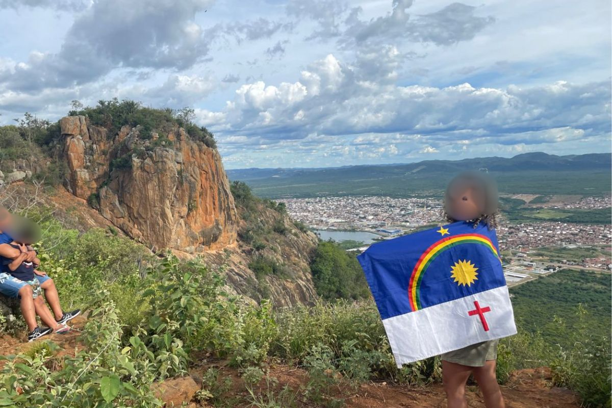

🇧🇷 Português
O Mirante Serra Talhada é um ponto de observação natural na zona rural de Serra Talhada (Pernambuco), conhecido por oferecer vistas panorâmicas da cidade, da serra e do sertão ao redor — ideal para fotos e contemplação da paisagem, especialmente no pôr do sol.
O acesso pode ser feito por estrada de terra e não há infraestrutura turística oficial, sendo recomendado ir com cuidado e, se possível, com alguém que conheça a região.
🇺🇸 English
The Mirante Serra Talhada is a natural viewpoint located in the rural area of Serra Talhada, Pernambuco, Brazil. It’s known for its wide panoramic views of the city, surrounding hills, and the sertão landscape, making it a great spot for photos and sunset watching.
The road to the viewpoint is mostly dirt and there’s no official tourist infrastructure, so it’s recommended to go carefully and, if possible, with someone who knows the region.